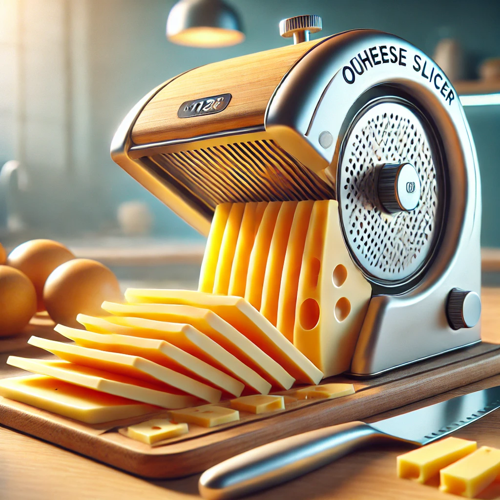

Media - MARIO Cheese Slicers
Stay updated with our latest media appearances, videos, audio content, photos, and social media links!
DIY Video
We hope the video by our MAGICIAN will helps you make a slicer by yourself !!
Listen to Our Latest Tutorial
Listen how to use a MARIO Cheese Slicer
Photo Gallery

Our Cheese Slicer in Action
The Precision of Our Manufacturing Process
Happy Customers with Our Products